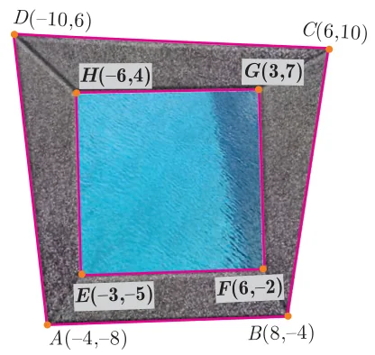
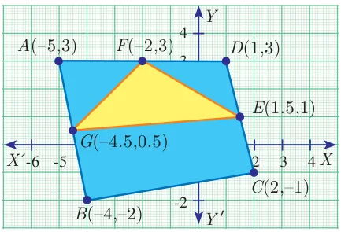

- Find the area of the triangle formed by the points
- \((1, -1)\), \((-4, 6)\) and \((-3, -5)\)
- \((-10, -4)\), \((-8, -1)\) and \((-3, -5)\)
- Determine whether the sets of points are collinear?
- \(\left(-\dfrac{1}{2}, 3\right)\), \((-5, 6)\) and \((-8, 8)\)
- \((a, b + c)\), \((b, c + a)\) and \((c, a + b)\)
- Vertices of given triangles are taken in order and their areas are provided aside. In each case, find the value of ‘\(p\)’.
S.No. Vertices Area (sq.units) (i) \((0, 0)\), \((p, 8)\), \((6, 2)\) 20 (ii) \((p, p)\), \((5, 6)\), \((5, -2)\) 32 - In each of the following, find the value of ‘\(a\)’ for which the given points are collinear.
- \((2, 3)\), \((4, a)\) and \((6, -3)\)
- \((a, 2 - 2a)\), \((-a + 1, 2a)\) and \((-4 - a, 6 - 2a)\)
- Find the area of the quadrilateral whose vertices are at
- \((-9, -2)\), \((-8, -4)\), \((2, 2)\) and \((1, -3)\)
- \((-9, 0)\), \((-8, 6)\), \((-1, -2)\) and \((-6, -3)\)
- Find the value of \(k\), if the area of a quadrilateral is 28 sq.units, whose vertices are taken in the order \((-4, -2)\), \((-3, k)\), \((3, -2)\) and \((2, 3)\)
- If the points \(A(-3, 9)\), \(B(a, b)\) and \(C(4, -5)\) are collinear and if \(a + b = 1\), then find \(a\) and \(b\).
- Let \(P(11, 7)\), \(Q(13.5, 4)\) and \(R(9.5, 4)\) be the mid-points of the sides \(AB\), \(BC\) and \(AC\) respectively of \(\Delta ABC\). Find the coordinates of the vertices \(A\), \(B\) and \(C\). Hence find the area of \(\Delta ABC\) and compare this with area of \(\Delta PQR\).
- In the figure, the quadrilateral swimming pool shown is surrounded by concrete patio. Find the area of the patio.

- A triangular shaped glass with vertices at \(A(-5, -4)\), \(B(1, 6)\) and \(C(7, -4)\) has to be painted. If one bucket of paint covers 6 square feet, how many buckets of paint will be required to paint the whole glass, if only one coat of paint is applied.
- In the figure, find the area of (i) triangle \(AGF\) (ii) triangle \(FED\) (iii) quadrilateral \(BCEG\).

Chapter 5 · Coordinate Geometry